Sitges Festa Major · 불꽃
시간대별 일정, 이동 정보, 지도와 관람 포인트를 확인하세요.
예상 도보108분
대중교통70분
택시·차량55분
일정 지점11곳
여행 전 확인: 23:00 La Fragata 불꽃. 귀환 수단이 확정되지 않으면 당일치기도 확정하지 않는다.
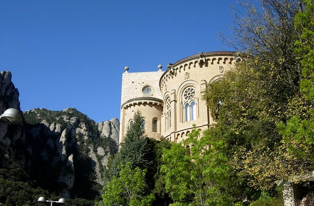
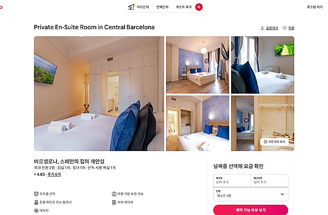
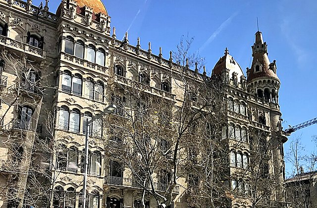
왜 중요한가숙소은(는) 오늘의 흐름에서 다음 장면으로 자연스럽게 이어지는 핵심 지점이다.
볼 포인트늦잠·브런치. 대표 풍경과 공간의 분위기에 집중한다.
실전 팁혼잡하면 핵심을 보고 이동하고, 예약 장소는 15분 일찍 도착한다.
시간 관리표시된 이동시간에 환승·대기 10분을 더한다.
MetroUrgell Metro Barcelona → Barcelona Sants Station15분 · 경로 ↗ Barcelona Sants
Sitges행 준비
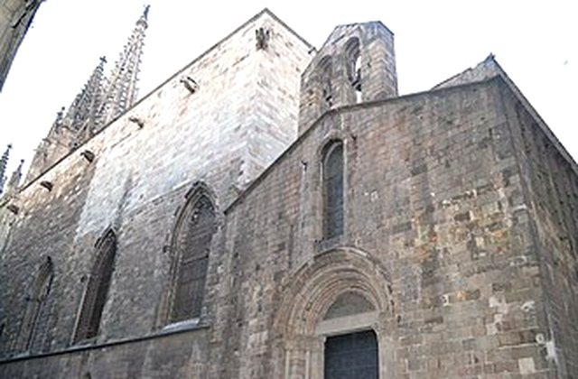
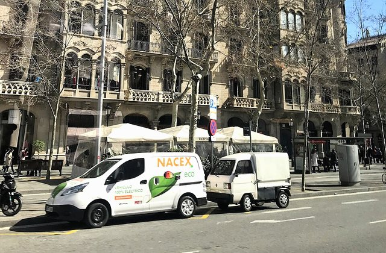
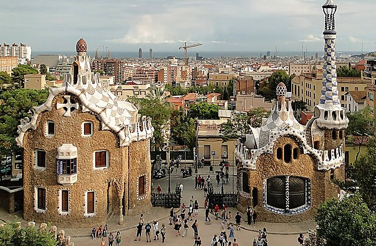
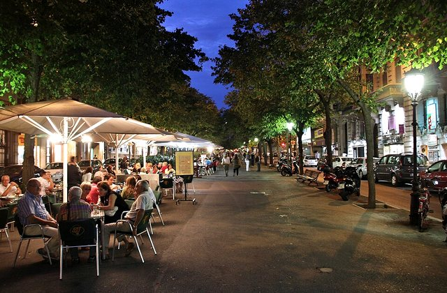
왜 중요한가Barcelona Sants은(는) 오늘의 흐름에서 다음 장면으로 자연스럽게 이어지는 핵심 지점이다.
볼 포인트Sitges행 준비. 대표 풍경과 공간의 분위기에 집중한다.
실전 팁혼잡하면 핵심을 보고 이동하고, 예약 장소는 15분 일찍 도착한다.
시간 관리표시된 이동시간에 환승·대기 10분을 더한다.
열차Barcelona Sants Station → Sitges Train Station40분 · 경로 ↗ 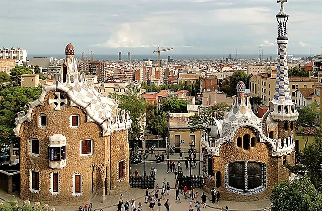
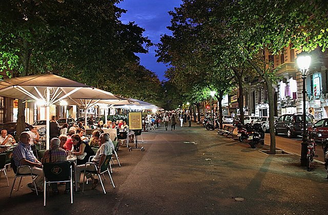
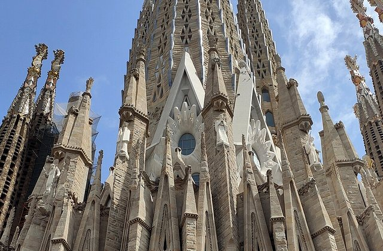
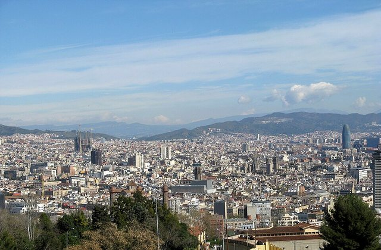
왜 중요한가Sitges Station은(는) 오늘의 흐름에서 다음 장면으로 자연스럽게 이어지는 핵심 지점이다.
볼 포인트R2 Sud 이용. 대표 풍경과 공간의 분위기에 집중한다.
실전 팁혼잡하면 핵심을 보고 이동하고, 예약 장소는 15분 일찍 도착한다.
시간 관리표시된 이동시간에 환승·대기 10분을 더한다.
도보Sitges Train Station → Sitges Old Town12분 · 경로 ↗ 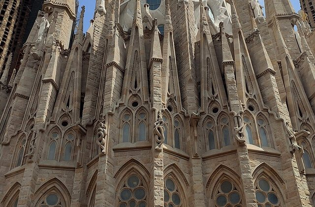
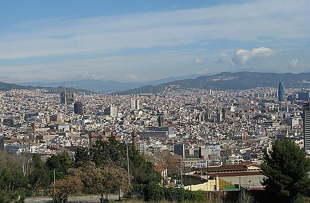
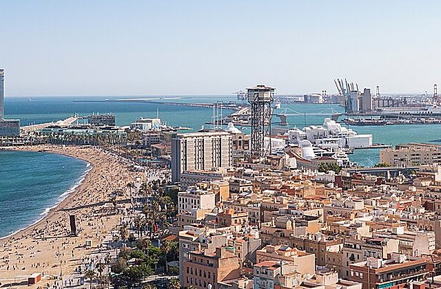
왜 중요한가Sitges Old Town은(는) 오늘의 흐름에서 다음 장면으로 자연스럽게 이어지는 핵심 지점이다.
볼 포인트구시가지 산책. 대표 풍경과 공간의 분위기에 집중한다.
실전 팁혼잡하면 핵심을 보고 이동하고, 예약 장소는 15분 일찍 도착한다.
시간 관리표시된 이동시간에 환승·대기 10분을 더한다.
도보Sitges Old Town → Church of Sant Bartomeu Sitges12분 · 경로 ↗ Sant Bartomeu Church
교회와 La Fragata
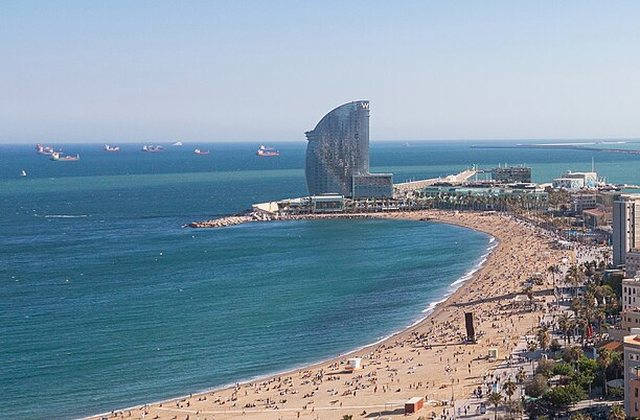
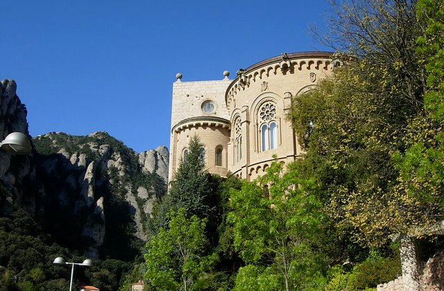
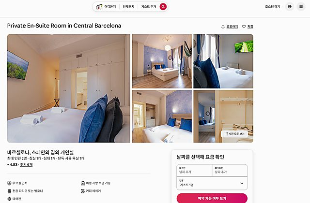
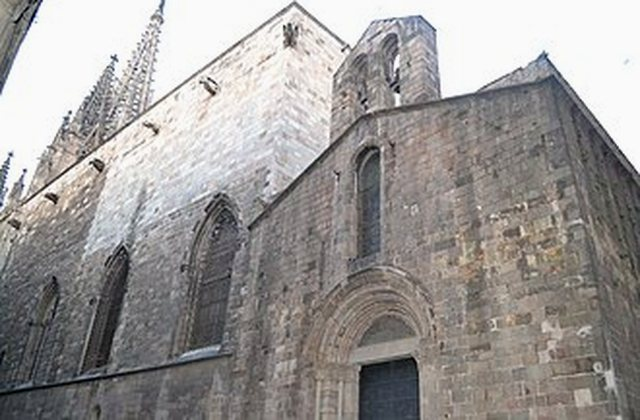
왜 중요한가Sant Bartomeu Church은(는) 오늘의 흐름에서 다음 장면으로 자연스럽게 이어지는 핵심 지점이다.
볼 포인트교회와 La Fragata. 대표 풍경과 공간의 분위기에 집중한다.
실전 팁혼잡하면 핵심을 보고 이동하고, 예약 장소는 15분 일찍 도착한다.
시간 관리표시된 이동시간에 환승·대기 10분을 더한다.
도보Church of Sant Bartomeu Sitges → Passeig Maritim Sitges20분 · 경로 ↗ 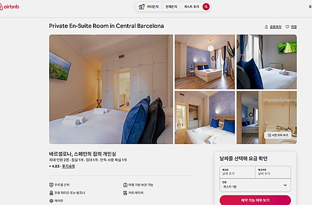
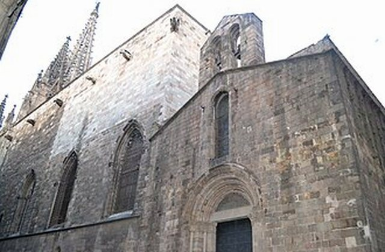
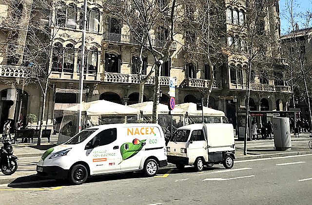
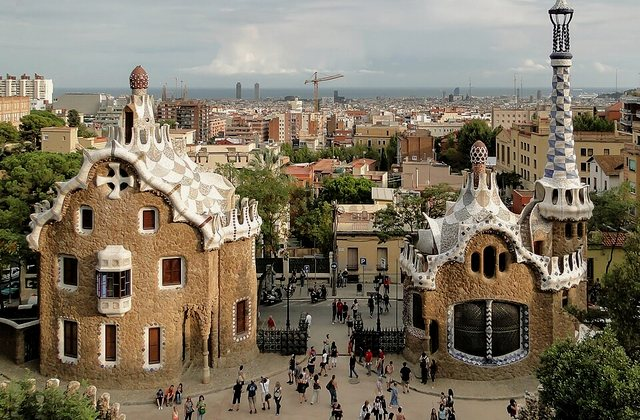
왜 중요한가Passeig Marítim은(는) 오늘의 흐름에서 다음 장면으로 자연스럽게 이어지는 핵심 지점이다.
볼 포인트해변 산책. 대표 풍경과 공간의 분위기에 집중한다.
실전 팁혼잡하면 핵심을 보고 이동하고, 예약 장소는 15분 일찍 도착한다.
시간 관리표시된 이동시간에 환승·대기 10분을 더한다.
도보Passeig Maritim Sitges → La Fragata Sitges Restaurants15분 · 경로 ↗ 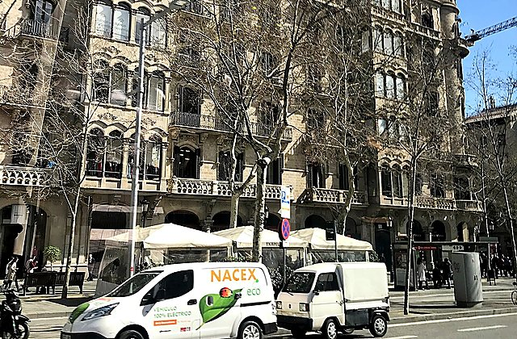
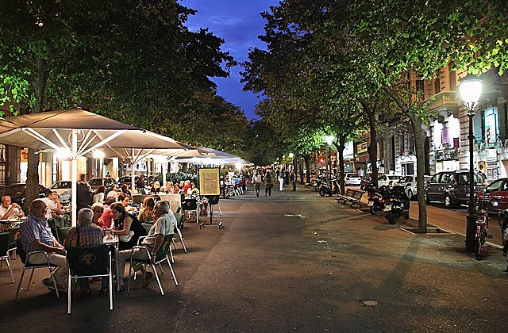
왜 중요한가해변가 디너은(는) 오늘의 흐름에서 다음 장면으로 자연스럽게 이어지는 핵심 지점이다.
볼 포인트불꽃 전 예약 식사. 대표 풍경과 공간의 분위기에 집중한다.
실전 팁혼잡하면 핵심을 보고 이동하고, 예약 장소는 15분 일찍 도착한다.
시간 관리표시된 이동시간에 환승·대기 10분을 더한다.
도보La Fragata Sitges Restaurants → La Fragata Sitges10분 · 경로 ↗ 
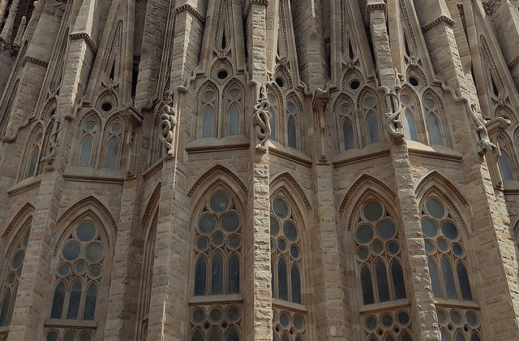

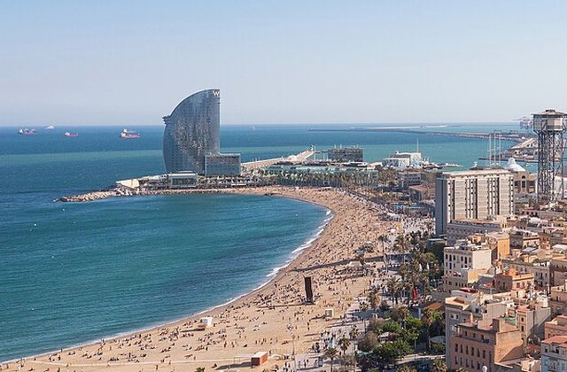
왜 중요한가La Fragata은(는) 오늘의 흐름에서 다음 장면으로 자연스럽게 이어지는 핵심 지점이다.
볼 포인트자리 확보. 대표 풍경과 공간의 분위기에 집중한다.
실전 팁혼잡하면 핵심을 보고 이동하고, 예약 장소는 15분 일찍 도착한다.
시간 관리표시된 이동시간에 환승·대기 10분을 더한다.
도보La Fragata Sitges → La Fragata Sitges0분 · 경로 ↗ Festa Major Fireworks
전통 불꽃
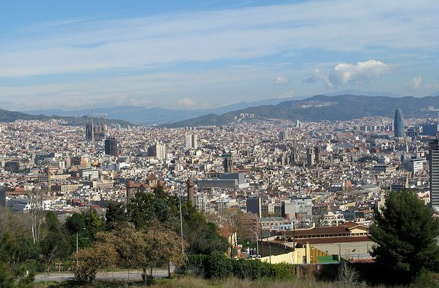
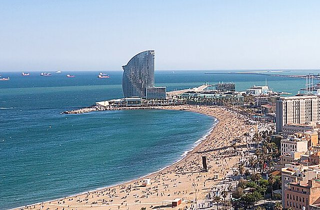
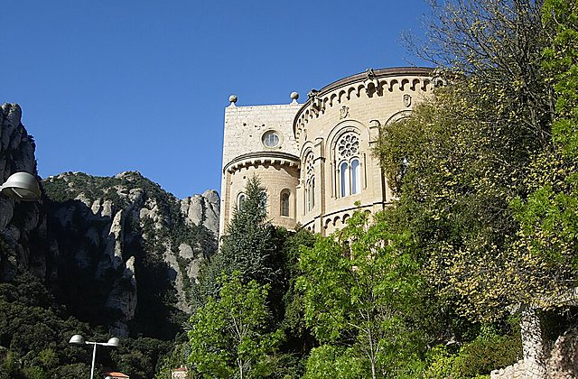
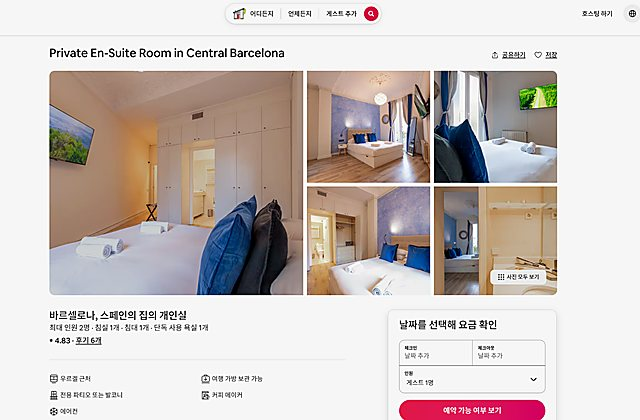
왜 중요한가Festa Major Fireworks은(는) 오늘의 흐름에서 다음 장면으로 자연스럽게 이어지는 핵심 지점이다.
볼 포인트전통 불꽃. 대표 풍경과 공간의 분위기에 집중한다.
실전 팁혼잡하면 핵심을 보고 이동하고, 예약 장소는 15분 일찍 도착한다.
시간 관리표시된 이동시간에 환승·대기 10분을 더한다.
도보La Fragata Sitges → La Fragata Sitges15분 · 경로 ↗ 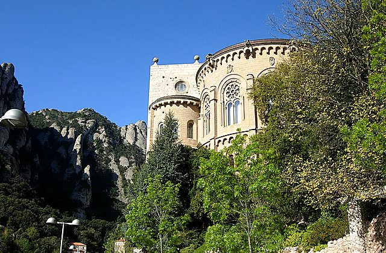
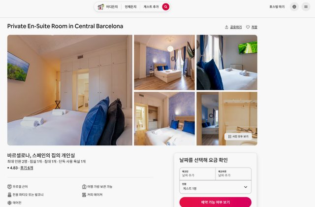
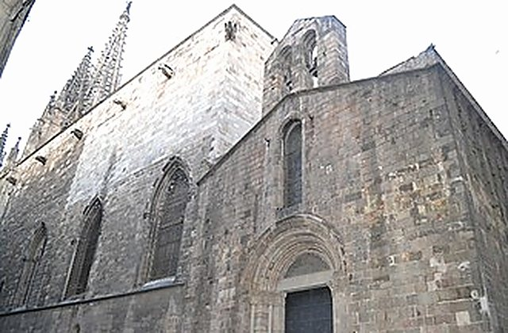
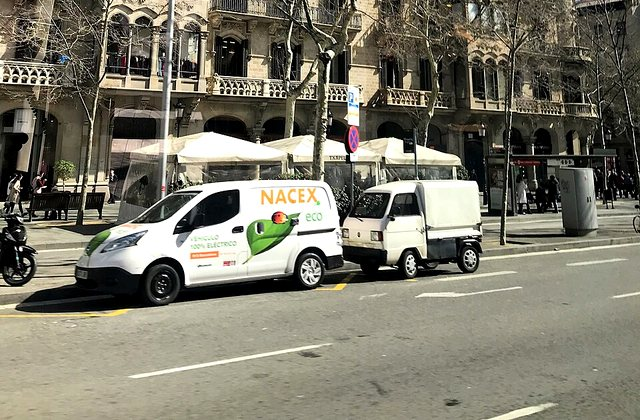
왜 중요한가사전예약 차량은(는) 오늘의 흐름에서 다음 장면으로 자연스럽게 이어지는 핵심 지점이다.
볼 포인트안전한 귀환. 대표 풍경과 공간의 분위기에 집중한다.
실전 팁혼잡하면 핵심을 보고 이동하고, 예약 장소는 15분 일찍 도착한다.
시간 관리표시된 이동시간에 환승·대기 10분을 더한다.
택시/차량La Fragata Sitges → Urgell Metro Barcelona55분 · 경로 ↗ 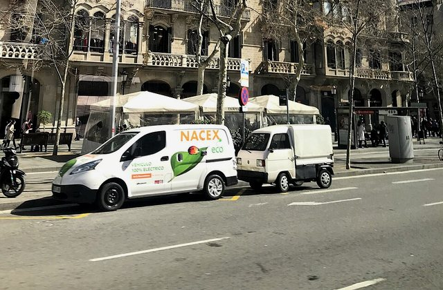
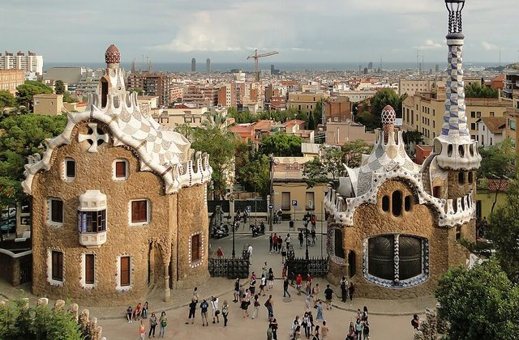
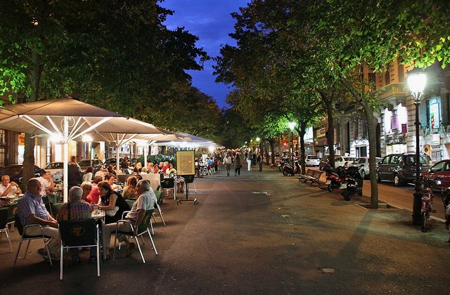
왜 중요한가숙소 복귀은(는) 오늘의 흐름에서 다음 장면으로 자연스럽게 이어지는 핵심 지점이다.
볼 포인트하이라이트 종료. 대표 풍경과 공간의 분위기에 집중한다.
실전 팁혼잡하면 핵심을 보고 이동하고, 예약 장소는 15분 일찍 도착한다.
시간 관리표시된 이동시간에 환승·대기 10분을 더한다.